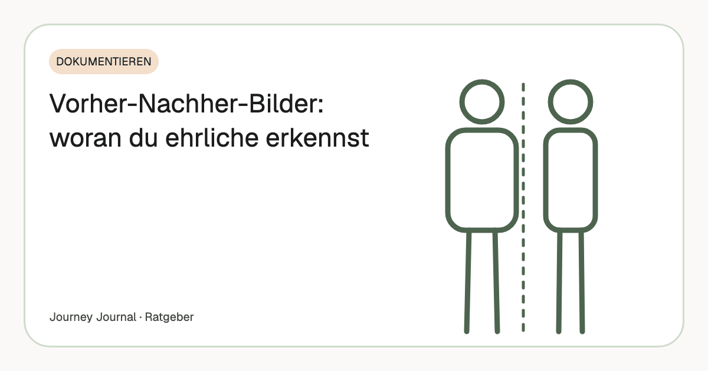

Ratgeber · Dokumentieren · 8 Min. Lesezeit
Vorher-Nachher-Bilder beim Abnehmen: Warum viele täuschen und wie deine ehrlich werden
Im Netz sehen Vorher-Nachher-Bilder oft aus wie zwei verschiedene Menschen. Manchmal steckt dahinter eine lange, echte Veränderung. Oft liegt ein Teil des Unterschieds aber im Licht, in der Haltung oder in der Uhrzeit. Dieser Artikel zeigt dir, woran du das erkennst, warum der Blick auf fremde Bilder selten guttut und wie du deine eigene Gegenüberstellung so anlegst, dass sie ehrlich ist. Wie du die Fotos selbst aufnimmst, steht nur in Kurzform hier und ausführlich in den verlinkten Artikeln.

Teil unseres Guides: Progress-Fotos: Der komplette Guide – Aufnahme, Rhythmus, Vergleich, Speicherung
Kurz gesagt
- Licht von oben, ein eingezogener Bauch, Anspannung, Bräune, ein anderer Kamera-Abstand und Bearbeitung können auf einem Foto mehr verändern als einige Wochen Abnehmen.
- Ein faires Paar zeigt denselben Ort, dasselbe Licht, dieselbe Kleidung, dieselbe Pose und eine Kamera an derselben Stelle. Fehlt etwas davon, ist es ein Eindruck und kein Beleg.
- Fremde Vorher-Nachher-Bilder laden zum Vergleichen ein. Eine Meta-Analyse über 156 Studien verbindet Vergleiche des eigenen Aussehens mit anderen mit größerer Unzufriedenheit mit dem eigenen Körper.
- Dein eigener Vergleich wird ehrlich mit einem Startfoto am ersten Tag, gleichen Bedingungen, Zwischenständen und mindestens vier Wochen Abstand.
Warum fremde Vorher-Nachher-Bilder so oft täuschen
Ein Foto zeigt Licht auf einem Körper, aus einem bestimmten Blickwinkel, zu einem bestimmten Zeitpunkt. Jede Bedingung, die sich zwischen zwei Aufnahmen ändert, sieht im Vergleich aus wie eine Veränderung des Körpers. Nicht jede wird absichtlich verändert: Viele machen ihr Vorher-Foto an einem schlechten Tag und das Nachher-Foto an einem guten.
Licht von oben gegen Licht von vorn
Deckenlicht oder Mittagssonne fällt von oben. Es wirft Schatten unter die Brust und in jede Vertiefung, und Konturen am Bauch treten deutlich hervor. Licht von vorn, etwa von einem Fenster, macht dieselbe Fläche glatt und weich. Ein solches Paar zeigt vor allem zwei verschiedene Lichtquellen.
Haltung, Bauch und Anspannung
Im Vorher-Bild hängen die Schultern, und der Bauch ist entspannt oder wird leicht herausgedrückt. Im Nachher-Bild steht dieselbe Person aufrecht, zieht den Bauch ein, spannt an und dreht den Oberkörper ein wenig. Dieser Wechsel dauert Sekunden. Unter dem Stichwort „Instagram vs Reality“ zeigen manche Menschen genau das: dieselbe Person einmal gestellt und einmal natürlich.
Pump, Bräune und Tageszeit
Direkt nach dem Training sind die Muskeln stärker durchblutet und wirken voller. Im Kraftsport heißt das Pump. Bräune und Selbstbräuner verstärken Schatten und lassen Konturen schärfer aussehen. Dazu kommt die Uhrzeit: Morgens vor dem Frühstück sieht der Bauch anders aus als abends nach dem Essen, weil Wasser, Mahlzeiten und Verdauung mitspielen. Wie stark der Körper über den Tag schwankt, erklärt der Artikel zu täglichen Gewichtsschwankungen.
Abstand, Brennweite und Kleidung
Je näher die Kamera ist, desto stärker vergrößert sie die Körperteile, die ihr am nächsten sind. Ward und Kollegen (2018) haben das für Selfies mathematisch beschrieben: Aus kurzer Entfernung wirkt die Nase größer als aus größerem Abstand, und der Effekt hängt von der Distanz ab. Am Körper gilt dasselbe: Ein Selfie aus Armlänge lässt den Bauch größer wirken als ein Foto mit Timer aus einigen Metern. Kleidung wirkt ähnlich stark. Eine tief sitzende Hose schneidet in die Hüfte, eine hoch geschnittene glättet sie.
Bearbeitung
Filter, Weichzeichner und Werkzeuge zum Verformen stecken in vielen Foto-Apps. Eine Taille schmaler zu ziehen, dauert Sekunden. Achte auf gebogene Türrahmen, gewellte Fliesen oder verzogene Muster im Hintergrund. Dort verraten sich solche Eingriffe am ehesten.
Woran du ein faires Vorher-Nachher-Bild erkennst
Ein fairer Vergleich hält alles gleich, was nicht der Körper ist. Leg die beiden Bilder nebeneinander und geh die Bedingungen der Reihe nach durch. Ist es derselbe Ort mit demselben Hintergrund? Kommt das Licht aus derselben Richtung? Trägt die Person dieselbe Kleidung, gleich hoch getragen? Steht die Kamera gleich hoch und gleich weit weg? Das erkennst du daran, dass Kopf und Füße an ähnlicher Stelle im Bild sitzen. Sind Pose, Armhaltung und Blickrichtung gleich?
Je mehr dieser Fragen du mit Ja beantworten kannst, desto mehr zeigt das Paar echte Veränderung. Ein Zeitraum hilft zusätzlich beim Einordnen. Wie schnell sichtbare Unterschiede realistisch kommen, beschreibt der Artikel Wann sieht man Erfolge beim Abnehmen.
Ein geschöntes Bild ist nicht automatisch gelogen. Viele wissen schlicht nicht, wie viel Licht und Haltung ausmachen. Als Maßstab taugt ein Paar mit wechselnden Bedingungen trotzdem nicht.
Warum der Vergleich mit fremden Bildern demotiviert
Vorher-Nachher-Bilder anderer Menschen sollen motivieren. Die Forschung zum sozialen Vergleich spricht eher dagegen. Myers und Crowther (2009) haben in einer Meta-Analyse 156 Studien mit 189 Effektgrößen ausgewertet. Wer das eigene Aussehen mit anderen vergleicht, ist im Schnitt unzufriedener mit dem eigenen Körper. Bei Frauen war der Zusammenhang stärker als bei Männern, bei jüngeren Menschen stärker als bei älteren.
Tiggemann und Zaccardo (2015) zeigten 130 Studentinnen entweder Fitspiration-Bilder von Instagram oder Reisefotos. Nach den Fitness-Bildern war die Stimmung schlechter und die Unzufriedenheit mit dem eigenen Körper höher. Den Effekt erklärte der Vergleich des eigenen Aussehens mit den Bildern. Holland und Tiggemann (2016) fanden in einer Übersicht über 20 Studien, dass gerade das Ansehen und Hochladen von Fotos in sozialen Netzwerken mit einem schlechteren Körperbild zusammenhing. Die meisten Befunde dort sind Korrelationen, die Autorinnen fordern mehr Langzeitstudien.
Es gibt auch eine ermutigende Seite. Tiggemann und Anderberg (2020) zeigten 305 Frauen zwischen 18 und 30 Jahren Bilder im Format „Instagram vs Reality“, also dieselbe Frau einmal idealisiert und einmal natürlich. Diese Paare und die natürlichen Bilder allein führten zu weniger Unzufriedenheit mit dem eigenen Körper als die idealisierten Bilder. Wer sieht, wie ein Bild entsteht, vergleicht sich offenbar weniger hart.
Ein fremdes Bild beginnt außerdem mit einem anderen Körper, einem anderen Alter und einem anderen Zeitraum. Etwas über dich erzählt nur der Vergleich mit deinem eigenen Startfoto.
Was ein ehrlicher Vergleich zeigen kann und was nicht
Ein faires Paar zeigt Form: die Taille, den Bauch im Profil, das Gesicht, die Haltung und wie Kleidung sitzt. Es zeigt keine Kilos, keine Gesundheit und keinen Wert als Mensch. Gleicher Gewichtsverlust kann auf Fotos sehr unterschiedlich aussehen, weil Fett nicht überall gleich schnell verschwindet.
Ein Foto ohne sichtbare Veränderung nach vier Wochen heißt meistens, dass der Zeitraum kurz war oder dass sich etwas an einer Stelle tut, die der Winkel nicht zeigt. Es heißt nicht, dass nichts passiert ist. Darum lohnt es sich, Fotos mit Waage und Maßband zu kombinieren, wie es der Artikel über Waage, Maßband, Fotos und Video beschreibt.
So legst du deine eigene Gegenüberstellung an
Das Startfoto sofort machen
Das Vorher-Foto ist das einzige, das du nie nachholen kannst. Mach es heute, auch wenn dir nicht danach ist. Du musst es niemandem zeigen. Wer wartet, bis er sich bereit fühlt, hat am Ende oft nur ein Bild aus der dritten Woche. Was am ersten Tag sonst noch dazugehört, steht in der Checkliste für Tag 1.
Welcher Abstand zwischen zwei Bildern sinnvoll ist
Vergleichen lohnt sich erst nach etwa vier Wochen, vorher überwiegt das Rauschen aus Wasser, Verdauung und Schlaf. Vergleiche dann immer das Startfoto mit dem aktuellen Bild und nicht die letzte Woche mit dieser. Start gegen heute zeigt die Richtung, Woche gegen Woche zeigt vor allem Schwankung. Warum die ersten Wochen oft frustrieren, erklärt der Artikel Warum du nach 2 Wochen keinen Unterschied siehst.
Nebeneinander oder Überblendung
Nebeneinander funktioniert, wenn beide Bilder gleich groß sind und Kopf und Füße auf derselben Höhe liegen. Bei einer Überblendung liegt das neue Bild halbtransparent über dem alten, oder ein Regler schiebt zwischen beiden hin und her. Dabei fallen Änderungen an Taille und Bauch besonders auf, allerdings auch jede Abweichung in Abstand und Pose. Damit ist die Überblendung zugleich ein Test, ob deine Bilder wirklich vergleichbar sind.
Zwischenstände und Video
Zwei Bilder zeigen Anfang und Ende. Zwischenstände, etwa einer pro Monat, zeigen den Weg dazwischen, und ein Plateau wirkt weniger bedrohlich, wenn du siehst, was davor kam. Ein kurzes Video ergänzt das Foto: Eine langsame Drehung zeigt alle Seiten, und ein Satz dazu hält fest, wie du dich gefühlt hast. Mehr dazu steht im Artikel zum Video-Tagebuch beim Abnehmen.
Die Aufnahme-Regeln in Kurzform
Für ein faires eigenes Paar brauchst du feste Bedingungen. Fotografiere zur selben Tageszeit, am besten morgens vor dem Frühstück, mit Tageslicht von vorn vor einer ruhigen Wand. Trag immer dieselbe Kleidung. Stell das Handy mit Timer auf Brusthöhe an einen festen Platz und markiere deine Standposition auf dem Boden. Nimm drei Winkel auf: Front, immer dieselbe Seite und Rücken. Steh entspannt, ohne den Bauch einzuziehen und ohne anzuspannen.
Den häufigsten Fehler zu jeder Regel und die Lösung findest du in den sieben Regeln, die Pose für jeden Winkel in der 3-Winkel-Methode und das ganze System im kompletten Progress-Foto-Guide.
Was rechtlich zu Vorher-Nachher-Werbung bekannt ist
Für deine privaten Fotos gibt es keine besonderen Regeln. Bei Werbung ist das anders. Das Heilmittelwerbegesetz regelt in § 11 Absatz 1 Satz 3 Nummer 1, dass außerhalb der Fachkreise für operative plastisch-chirurgische Eingriffe nicht mit der Wirkung durch eine vergleichende Darstellung des Körperzustandes oder des Aussehens vor und nach dem Eingriff geworben werden darf. Welche Eingriffe gemeint sind, steht in § 1 des Gesetzes: Eingriffe zur Veränderung des menschlichen Körpers ohne medizinische Notwendigkeit.
Der Satz nennt ausdrücklich nur diese Eingriffe. Ob für andere Angebote wie Abnehmprogramme oder Coachings eigene Regeln gelten, kann dieser Artikel nicht beantworten, er ist keine Rechtsberatung. Für dich als Betrachterin oder Betrachter hilft eine einfache Haltung: Sobald jemand mit einem Vorher-Nachher-Bild etwas verkaufen will, ist es Werbung, und du darfst es so kritisch lesen wie jede andere Anzeige.
Häufige Fragen
Sind Vorher-Nachher-Bilder im Internet oft gestellt?
Nicht immer, aber oft unterscheiden sich die Bedingungen. Licht, Haltung, Anspannung, Bräune, Kamera-Abstand und Bearbeitung können viel verändern. Prüfe, ob Ort, Licht, Kleidung, Pose und Kamerahöhe auf beiden Bildern gleich sind.
Ab wann lohnt sich ein Vorher-Nachher-Vergleich beim Abnehmen?
Nach etwa vier Wochen. Vorher überdecken Schwankungen durch Wasser, Verdauung und Schlaf die Veränderung. Vergleiche dann dein Startfoto mit dem aktuellen Bild.
Ist nebeneinander oder überblendet besser?
Nebeneinander ist übersichtlich und gut zum Zeigen. Eine Überblendung macht Änderungen der Kontur deutlicher, zeigt aber auch jede Abweichung in Abstand und Pose.
Warum fühle ich mich nach fremden Vorher-Nachher-Bildern schlechter?
Weil du dich dabei vergleichst. Myers und Crowther (2009) fanden in einer Meta-Analyse über 156 Studien, dass Vergleiche des eigenen Aussehens mit anderen mit größerer Körperunzufriedenheit verbunden sind. Dein eigenes Startfoto ist der fairere Maßstab.
Darf man mit Vorher-Nachher-Bildern werben?
Für operative plastisch-chirurgische Eingriffe ohne medizinische Notwendigkeit verbietet das Heilmittelwerbegesetz in § 11 Absatz 1 Satz 3 Nummer 1 außerhalb der Fachkreise Werbung mit einer vergleichenden Darstellung vor und nach dem Eingriff. Deine privaten Fotos betrifft das nicht.
Quellen
- Myers T. A., Crowther J. H. (2009): Social comparison as a predictor of body dissatisfaction: A meta-analytic review. J Abnorm Psychol 118(4) – 156 Studien, 189 Effektgrößen: Vergleich des Aussehens hängt mit größerer Körperunzufriedenheit zusammen
- Tiggemann M., Zaccardo M. (2015): „Exercise to be fit, not skinny“: The effect of fitspiration imagery on women’s body image. Body Image 15 – Experiment mit 130 Studentinnen: Fitspiration-Bilder verschlechtern Stimmung und Körperzufriedenheit
- Holland G., Tiggemann M. (2016): A systematic review of the impact of the use of social networking sites on body image and disordered eating outcomes. Body Image 17 – Übersicht über 20 Studien; Ansehen und Hochladen von Fotos besonders problematisch
- Tiggemann M., Anderberg I. (2020): Social media is not real: The effect of ‘Instagram vs reality’ images on women’s social comparison and body image. New Media & Society 22(12) – 305 Frauen: gestellte und natürliche Bilder nebeneinander senken die Körperunzufriedenheit
- Ward B., Ward M., Fried O., Paskhover B. (2018): Nasal Distortion in Short-Distance Photographs: The Selfie Effect. JAMA Facial Plast Surg 20(4) – Mathematisches Modell: Verzerrung durch kurzen Kamera-Abstand
- Heilmittelwerbegesetz (HWG) § 11 – Absatz 1 Satz 3 Nummer 1; die gemeinten Eingriffe nennt § 1 Absatz 1 Nummer 2 Buchstabe c
Dieser Artikel ersetzt keine ärztliche Beratung. Bei einer größeren Gewichtsreduktion ist eine medizinische Begleitung sinnvoll.